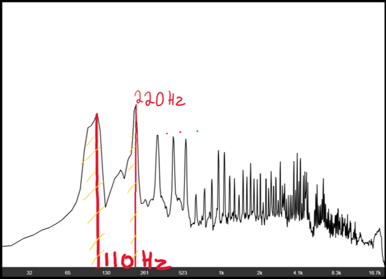

Timbre is the quality of sound that comes from an instrument, as previously discussed, the pitch from a stringed instrument is dictated by its “fundamental frequency” however different pitches sound over the fundamental frequency. These are what are known as overtones. The difference in timbre can be explained by the changing presence and level of the range of overtones. For example, a guitar with a very “bright” sound will have many more emphasised higher frequency overtones that give the sound a sharper and harsher tone. Where else, a guitar with a “warm” tone will sound much more mellow and with a very rich and bassy tone and reduced high frequency information.
Use the simulator to see for yourself!
Amplitude (dB)
Frequency (Hz)
3.2 - The Harmonic Series
Intervals on a musical instrument correspond to ratios between the fundamental frequencies of the two notes being sounded. For example, a pitch with the frequency of 440 hertz and a pitch with double that at 880 hertz is a 2:1 ratio, as one pitch is double the frequency of the other, in music this is denotes as an octave, in which the notes share the same letter name of frequency and are largely harmonious.

Graphic EQ, displays an instrument playing an “A” note at 110 hertz.
The sound is broken down into all the different pitches present, as can be seen, the apex of pitch is around the 110 hertz mark. Other less highly expressed frequencies are part of the harmonic series/ratios formed from the 110 hertz such as the 220 hertz octave (also depicted)